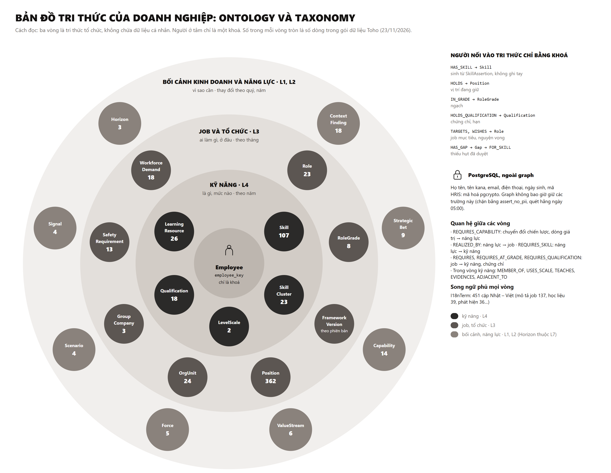
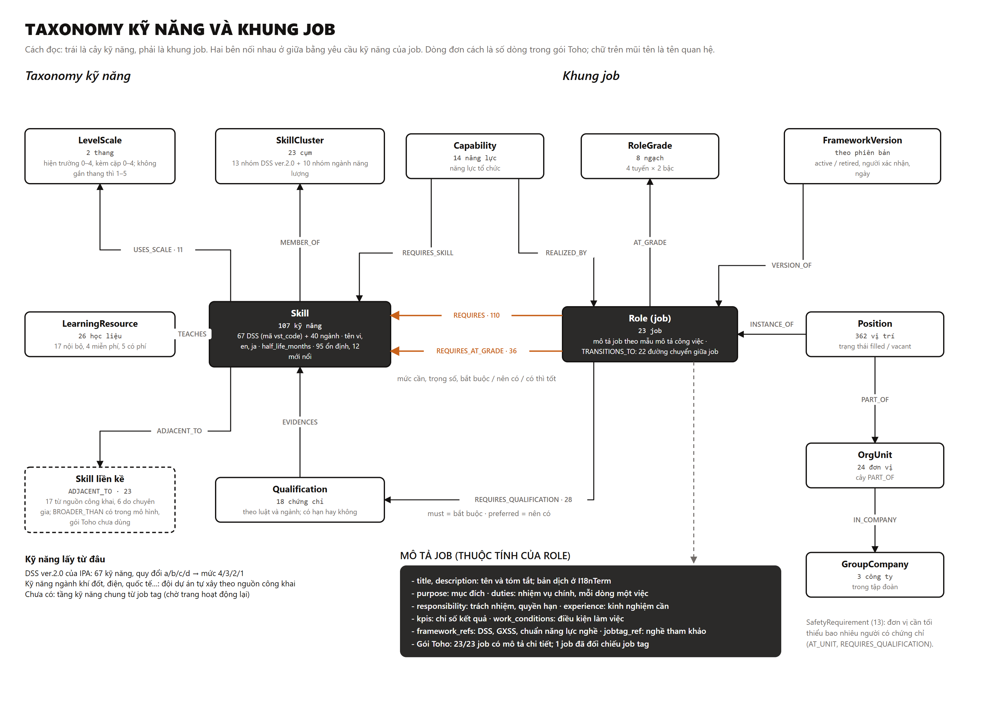
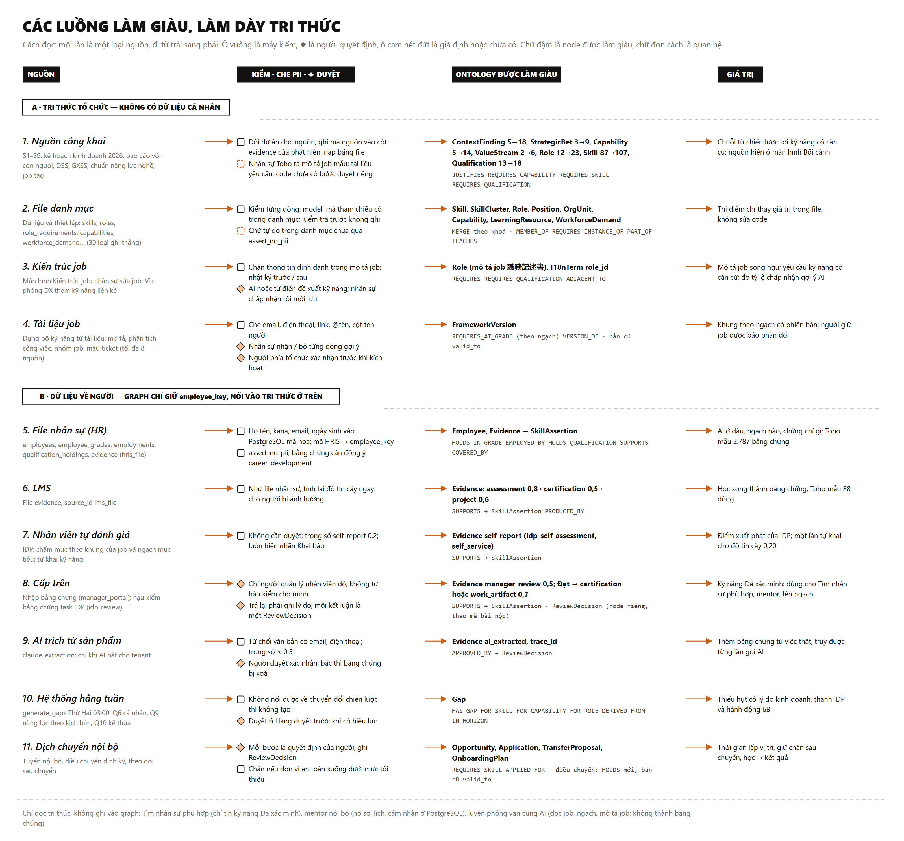
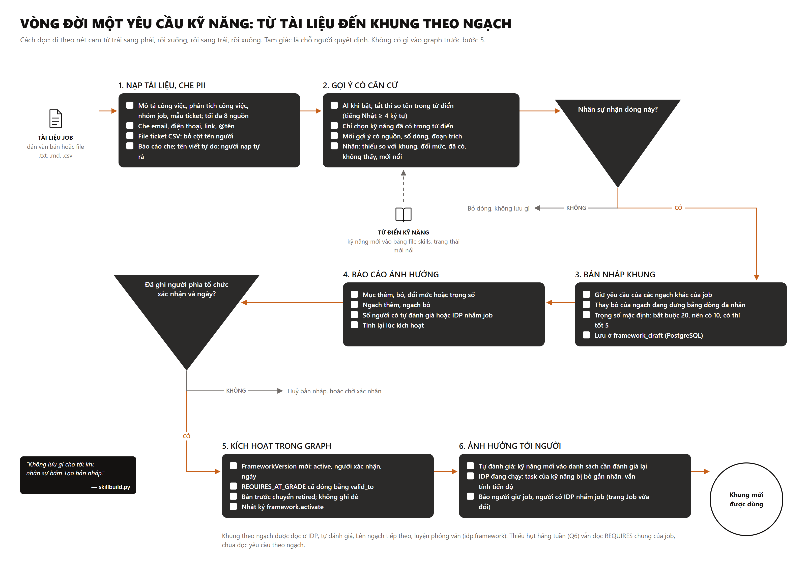
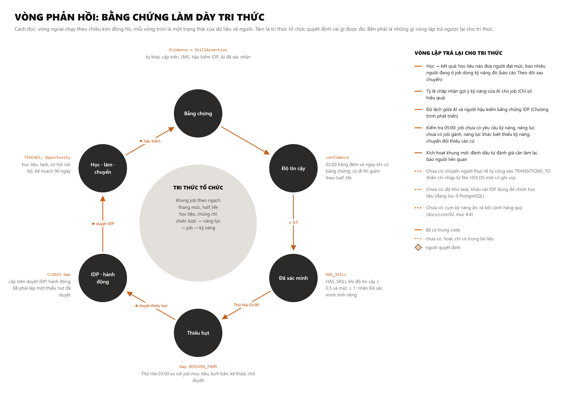
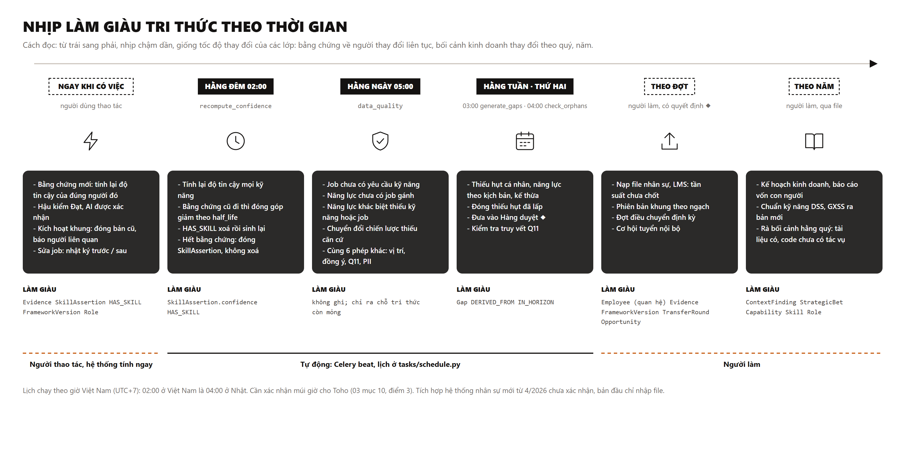
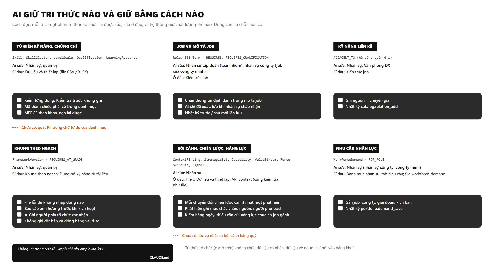

Ontology và các luồng làm giàu tri thức — Talent Flow
Ngày 23/11/2026. Tài liệu trả lời hai câu hỏi: lõi tri thức của doanh nghiệp trong Talent Flow gồm những ontology, taxonomy nào, và dữ liệu từ đâu chảy vào để làm giàu, làm dày chúng. Chỉ ghi điều có trong code hoặc tài liệu; chỗ chưa có ghi "chưa có", chỗ là giả định ghi "giả định". Đọc cùng 03 · Kiến trúc dữ liệu (mô hình 7 lớp, PII, độ tin cậy, lịch sử): tài liệu này không lặp lại các phần đó, chỉ nhìn chúng từ góc "tri thức được bồi đắp thế nào". Hình sinh bằng python tools/diagrams/specs/ontology.py, xuất PNG bằng node tools/diagrams/render_svg.mjs docs/kien-truc/img docs/kien-truc/img/on-*.svg. Sửa nội dung hình ở file spec, không sửa SVG bằng tay. Tên node, quan hệ giữ tiếng Anh. Lưu ý về nguồn: db/schema.cypher chỉ khai báo khoá duy nhất và chỉ mục cho từng nhãn node. Quan hệ (tên, chiều, thuộc tính) trong tài liệu này lấy từ các truy vấn ghi thật trong backend/app/graph/queries/ (ingest_*.cypher, framework_activate.cypher, evidence_add.cypher, gap_upsert_*.cypher…).
Mục lục
- Lõi tri thức: tri thức tổ chức và dữ liệu về người
- Các ontology và taxonomy
- Bản đồ các luồng làm giàu
- Từng luồng
- Vòng đời một yêu cầu kỹ năng: từ tài liệu tới khung theo ngạch
- Vòng phản hồi: bằng chứng làm dày tri thức
- Nhịp làm giàu theo thời gian
- Ai giữ tri thức nào
- Chưa có, điểm lệch, cần xác nhận
1. Lõi tri thức: tri thức tổ chức và dữ liệu về người

Graph của Talent Flow tách hai loại dữ liệu, theo nguyên tắc "tách định nghĩa và thực thể (TBox/ABox)" của docs/core/02 mục 0:
| Tri thức tổ chức (TBox, ontology và taxonomy) | Dữ liệu về người (ABox) |
|---|
| Là gì | Từ điển kỹ năng, khung job, ngạch, năng lực, chiến lược, bối cảnh, chứng chỉ, học liệu | Ai giữ vị trí nào, có bằng chứng kỹ năng gì, thiếu gì, đang học gì, ứng tuyển đâu |
| Node chính | Skill, SkillCluster, LevelScale, Qualification, LearningResource, Role, RoleGrade, FrameworkVersion, Position, OrgUnit, GroupCompany, SafetyRequirement, WorkforceDemand, Capability, ContextFinding, StrategicBet, ValueStream, Force, Scenario, Signal, Horizon, I18nTerm | Employee, SkillAssertion, Evidence, Assessment, Project, Gap, DevelopmentAction, CareerInterview, Application, TransferProposal, OnboardingPlan |
| Có PII không | Không (không gắn với một người cụ thể) | Graph chỉ giữ employee_key; họ tên, tên kana, email, điện thoại, ngày sinh, mã HRIS ở PostgreSQL, mã hoá pgcrypto |
| Tốc độ thay đổi | Theo tháng (job, tổ chức), năm (kỹ năng), quý (bối cảnh) | Liên tục |
| Ai sửa | Nhân sự, quản trị, Văn phòng DX (xem mục 8) | Sinh từ file nhân sự, thao tác của nhân viên, cấp trên, tác vụ nền |
Người nối vào tri thức chỉ qua khoá: HAS_SKILL → Skill (sinh từ SkillAssertion, không ghi tay), HOLDS → Position, IN_GRADE → RoleGrade, EMPLOYED_BY → GroupCompany, HOLDS_QUALIFICATION → Qualification, TARGETS / WISHES → Role, HAS_GAP → Gap → FOR_SKILL. Nhờ vậy tri thức tổ chức dùng lại được, chia sẻ được (kể cả trong tài liệu công khai) mà không lộ dữ liệu cá nhân.
Số trong hình là số dòng trong gói Toho db/seed/toho/ (đếm bằng csv.reader ngày 23/11/2026). FrameworkVersion không có file seed: sinh khi kích hoạt khung (seed demo cũng đi qua bước này).
Nguồn: docs/core/02-workforce-graph-architecture.md mục 0–3, CLAUDE.md (quy tắc bất biến), db/schema.cypher, backend/app/graph/queries/ingest_*.cypher, db/seed/toho/*.csv.
2. Các ontology và taxonomy

2.1 Bối cảnh kinh doanh (L1) và năng lực tổ chức (L2)
| Node | Khoá | Thuộc tính chính | Quan hệ (từ truy vấn ghi) | Gói Toho |
|---|
ContextFinding | finding_id | criterion (value / capability / rules), time_lens (past / present / future), statement, evidence (mã nguồn), certainty, hr_implication, owner | -[:JUSTIFIES {strength}]->(StrategicBet) | 18 (9 capability, 5 value, 4 rules) |
StrategicBet | bet_id | name, horizon, status, owner | -[:REQUIRES_CAPABILITY {target_maturity, by_horizon}]->(Capability) | 9 |
ValueStream | stream_id | customer_segment, revenue_share, trend | -[:REQUIRES_CAPABILITY]->(Capability) | 6 |
Force | force_id | type (PESTEL), impact, uncertainty | (Capability)-[:EXPOSED_TO {direction, impact}]->, -[:DEFINES_AXIS]->(Scenario) | 5 |
Scenario | code | axis_a, axis_b, probability_note | (Capability)-[:DEMANDED_IN {fte, horizon}]-> | 4 |
Signal | signal_id | description, threshold, status | -[:INDICATES]->(Scenario) | 4 |
Horizon | code | H1, H2, H3 (tạo bằng horizons_ensure) | (Gap)-[:IN_HORIZON]->, (DevelopmentAction)-[:IN_HORIZON]-> | 3 |
Capability | cap_id | class (differentiating / baseline / supporting / declining), maturity_now, mục tiêu 12 và 36 tháng, vrio, owner | -[:REQUIRES_SKILL {min_level, weight}]->(Skill), -[:REALIZED_BY {share}]->(Role) | 14 |
Ràng buộc nghiệp vụ: mỗi StrategicBet phải có ít nhất một JUSTIFIES (BetRow từ chối dòng thiếu). Đây là đầu của chuỗi truy vết: thiếu hụt và hành động phải nối ngược được về đây (Q11).
2.2 Job, ngạch, vị trí, tổ chức (L3)
| Node | Khoá | Quan hệ | Gói Toho |
|---|
Role (job) | role_id | -[:REQUIRES {min_level, weight, criticality}]->(Skill), -[:REQUIRES_AT_GRADE {grade_id, min_level, weight, criticality, valid_from, valid_to, version_id}]->(Skill), -[:REQUIRES_QUALIFICATION {need: must / preferred}]->(Qualification), -[:AT_GRADE]->(RoleGrade), -[:TRANSITIONS_TO {observed_count, avg_months, type}]->(Role), -[:MAPS_TO {confidence}]->(Occupation) | 23 job, 110 REQUIRES, 36 REQUIRES_AT_GRADE, 28 REQUIRES_QUALIFICATION, 22 TRANSITIONS_TO |
RoleGrade | grade_id | (Role)-[:AT_GRADE]->; người: (Employee)-[:IN_GRADE]-> | 8 (4 tuyến base, leader, expert, management × 2 bậc) |
FrameworkVersion | version_id | -[:VERSION_OF]->(Role); status active / retired, confirmed_by, confirmed_at | sinh khi kích hoạt |
Position | position_id | -[:INSTANCE_OF]->(Role), -[:PART_OF]->(OrgUnit); state filled / vacant | 362 |
OrgUnit | unit_id | -[:PART_OF]->(OrgUnit) (cây), -[:IN_COMPANY]->(GroupCompany) | 24 |
GroupCompany | company_id | người: EMPLOYED_BY, SECONDED_TO | 3 |
SafetyRequirement | req_id | -[:AT_UNIT]->(OrgUnit), -[:REQUIRES_QUALIFICATION]->(Qualification); min_count, basis legal / internal | 13 |
WorkforceDemand | demand_id | -[:FOR_ROLE]->(Role); công ty, mảng, giai đoạn, kịch bản, số người | 18 |
Mô tả công việc (theo mẫu mô tả công việc của Nhật) là thuộc tính của Role (RoleRow, docs/toho-gas/12 mục 3): title, description, purpose, duties (mỗi dòng một nhiệm vụ), responsibility, experience, kpis, work_conditions, framework_refs (DSS, GXSS, chuẩn đánh giá năng lực nghề nghiệp, luật), jobtag_ref. Bản ngôn ngữ còn lại lưu ở I18nTerm (kind role, role_desc, role_jd). Gói Toho: 23/23 job có mô tả chi tiết, 1 job có jobtag_ref (nhân viên đọc đồng hồ); mô tả là bản mẫu của đội dự án, nhân sự Toho cần rà.
Hai mức yêu cầu kỹ năng của job: REQUIRES là yêu cầu chung (sửa ở Kiến trúc job, ghi đè, bản cũ chỉ còn trong nhật ký); REQUIRES_AT_GRADE là yêu cầu theo ngạch, có phiên bản (FrameworkVersion), bản cũ đóng bằng valid_to. IDP, tự đánh giá, Lên ngạch tiếp theo, luyện phỏng vấn đọc yêu cầu theo ngạch nếu job có khai báo, không thì đọc REQUIRES (idp_framework.cypher).
Occupation và MAPS_TO có trong mô hình nhưng gói Toho không có file occupations; tham chiếu nghề ngoài dùng thuộc tính jobtag_ref, framework_refs.
2.3 Kỹ năng, thang mức, chứng chỉ, học liệu (L4)
| Node | Khoá | Thuộc tính, quan hệ | Gói Toho |
|---|
Skill | skill_id | name_vi, name_en, name_ja, category (technical / domain / human / AI-collab), vst_code (mã DSS), half_life_months, status (stable / emerging / declining), learnable; -[:MEMBER_OF {centrality}]->(SkillCluster), -[:ADJACENT_TO {transfer_weight, source}]->(Skill), -[:BROADER_THAN]->(Skill), -[:USES_SCALE]->(LevelScale) | 107 (67 DSS ver.2.0 + 40 kỹ năng ngành; 95 stable, 12 emerging) |
SkillCluster | cluster_id | name, latent | 23 (13 nhóm DSS + 10 nhóm ngành) |
LevelScale | scale_id | levels_json (mức 0–10, nhãn vi / ja, mô tả) | 2 (hiện trường 0–4, kèm cặp 0–4); 11 kỹ năng gắn thang; còn lại thang chung 1–5 |
Qualification | qual_id | name_ja, name_vi, law, kind, expires; -[:EVIDENCES]->(Skill); người: HOLDS_QUALIFICATION {issued_at, expires_at} | 18 |
LearningResource | resource_id | format, duration_hours, provider, tier (internal / free / paid), url; -[:TEACHES {to_level}]->(Skill) | 26 (17 nội bộ, 4 miễn phí, 5 có phí) |
I18nTerm | vi | ja, kind; phủ mọi vòng | 451 cặp (mô tả job 137, học liệu 39, phát hiện 36…) |
Quan hệ kỹ năng liền kề: 23 ADJACENT_TO (17 source = public_source, 6 expert). BROADER_THAN có truy vấn ghi nhưng gói Toho chưa có dòng nào. DSS quy đổi a/b/c/d → mức 4/3/2/1 (docs/toho-gas/08 mục 1.1).
Nguồn: backend/app/ingest/rows.py, backend/app/graph/queries/ingest_*.cypher, framework_activate.cypher, idp_framework.cypher, db/schema.cypher, docs/toho-gas/08-CATALOGS.md, 12-NGUON-DU-LIEU-GRAPH.md, db/seed/toho/*.csv.
3. Bản đồ các luồng làm giàu

Hai nhóm luồng:
- A. Làm giàu tri thức tổ chức (thêm node, quan hệ vào taxonomy): nguồn công khai, file danh mục, màn hình Kiến trúc job, dựng bộ kỹ năng từ tài liệu.
- B. Làm dày dữ liệu về người (thêm bằng chứng, trạng thái, nối vào taxonomy bằng
employee_key): file nhân sự, LMS, tự đánh giá, cấp trên, AI, thiếu hụt hằng tuần, dịch chuyển nội bộ.
| # | Nguồn | Kiểm · che PII · ◆ người duyệt | Ontology được làm giàu | Giá trị |
|---|
| 1 | Nguồn công khai S1–S9 | Đội dự án đọc, ghi mã nguồn vào cột evidence, nạp bằng file. ◆ Nhân sự Toho rà mô tả job mẫu: giả định, code không có bước duyệt riêng | ContextFinding, StrategicBet, Capability, ValueStream, Force, Signal, Role, Skill, Qualification; JUSTIFIES, REQUIRES_CAPABILITY, REQUIRES_QUALIFICATION, ADJACENT_TO | Chuỗi chiến lược → kỹ năng có căn cứ, mã nguồn hiện ở màn hình Bối cảnh |
| 2 | File danh mục (Dữ liệu và thiết lập) | Kiểm từng dòng, mã tham chiếu có trong danh mục, Kiểm tra trước (dry_run). Chữ tự do chưa qua assert_no_pii | Mọi node danh mục, MERGE theo khoá | Thí điểm chỉ thay giá trị trong file |
| 3 | Màn hình Kiến trúc job | Chặn PII trong mô tả job; nhật ký trước / sau; ◆ nhân sự chấp nhận đề xuất kỹ năng (AI hoặc từ điển) rồi mới lưu | Role (mô tả job), I18nTerm; REQUIRES, REQUIRES_QUALIFICATION, ADJACENT_TO | Mô tả job song ngữ; đo tỷ lệ chấp nhận gợi ý AI |
| 4 | Dựng bộ kỹ năng từ tài liệu | Che email, điện thoại, link, @tên, cột tên người; ◆ nhân sự nhận / bỏ từng dòng; ◆ người phía tổ chức xác nhận khi kích hoạt | FrameworkVersion; REQUIRES_AT_GRADE, VERSION_OF | Khung theo ngạch có phiên bản (mục 5) |
| 5 | File nhân sự (hris_file) | PII vào PostgreSQL mã hoá, mã HRIS → employee_key, assert_no_pii, bằng chứng cần đồng ý career_development | Employee; HOLDS, IN_GRADE, EMPLOYED_BY, HOLDS_QUALIFICATION; Evidence → SkillAssertion | Ai ở đâu, ngạch nào, chứng chỉ gì; Toho mẫu 2.787 bằng chứng |
| 6 | LMS (lms_file) | Như file nhân sự; tính lại độ tin cậy ngay | Evidence assessment, certification, project | Học xong thành bằng chứng; Toho mẫu 88 dòng |
| 7 | Nhân viên tự đánh giá, tự khai (idp_self_assessment, self_service) | Không cần duyệt; trọng số 0,2; nhãn Khai báo | Evidence self_report | Điểm xuất phát của IDP; Toho mẫu 822 dòng |
| 8 | Cấp trên (manager_portal, idp_review) | ◆ Chỉ người quản lý nhân viên đó; không tự hậu kiểm cho mình; trả lại phải có lý do; ghi ReviewDecision | Evidence manager_review; hậu kiểm Đạt → certification (task có học liệu) hoặc work_artifact | Kỹ năng Đã xác minh |
| 9 | AI trích từ sản phẩm (claude_extraction) | Từ chối văn bản có email, điện thoại; trọng số × 0,5; ◆ người duyệt xác nhận (APPROVED_BY) hoặc bác (bằng chứng bị xoá) | Evidence ai_extracted, trace_id | Bằng chứng từ việc thật, truy được từng lần gọi |
| 10 | Tác vụ generate_gaps (Thứ Hai 03:00) | Không có DERIVED_FROM thì không tạo; ◆ duyệt ở Hàng duyệt | Gap; HAS_GAP, FOR_SKILL / FOR_CAPABILITY / FOR_ROLE, DERIVED_FROM, IN_HORIZON | Thiếu hụt có lý do kinh doanh |
| 11 | Tuyển nội bộ, điều chuyển định kỳ, theo dõi sau chuyển | ◆ Mỗi bước có người quyết định (ReviewDecision); chặn nếu đơn vị an toàn xuống dưới mức | Opportunity -[:REQUIRES_SKILL]->, Application, TransferProposal, OnboardingPlan; điều chuyển: HOLDS mới, bản cũ valid_to | Thời gian lấp vị trí, giữ chân, học → kết quả |
Nguồn: backend/app/ingest/service.py, backend/app/api/v1/toho.py, backend/app/services/skillbuild.py, framework.py, backend/app/domain/redact.py, backend/app/api/v1/employees.py, backend/app/services/idp.py, reviews.py, gaps.py, market.py, transfer.py, followup.py, portfolio.py, docs/toho-gas/12-NGUON-DU-LIEU-GRAPH.md.
4. Từng luồng
4.1 Nguồn công khai → bối cảnh, job, kỹ năng (luồng 1)
Đội dự án đọc chín nguồn công khai (docs/toho-gas/12 mục 1), viết thành CSV trong db/seed/toho/ (enrich.py, job_descriptions.py) rồi nạp như mọi file khác.
| Nguồn | Làm giàu | Trước → sau |
|---|
| S1 kế hoạch kinh doanh 2026 | ContextFinding, StrategicBet, Capability, ValueStream, Signal, WorkforceDemand | phát hiện 5 → 18, chuyển đổi 3 → 9, năng lực 5 → 14, dòng giá trị 2 → 6, lực tác động, tín hiệu 2, 1 → 5, 4 |
| S2 báo cáo vốn con người 2026 | ContextFinding TF-14, 15, 18; Role (nhóm nhân lực cần tăng); LearningResource | job 12 → 23 |
| S3 METI, Hiệp hội Khí đốt Nhật Bản về thiếu người an toàn | ContextFinding TF-17, Force TFO-LABOR | — |
| S4 DSS ver.2.0, S5 GXSS | Skill, SkillCluster, framework_refs của job | kỹ năng 87 → 107 |
| S6 chuẩn đánh giá năng lực nghề nghiệp, S7 job tag, S8 năng lực nền tảng của người đi làm | framework_refs, jobtag_ref, cấu trúc mô tả job | — |
| S9 tài liệu nhân viên kiểm tra thiết bị khí phía khách hàng | Qualification | chứng chỉ 13 → 18 |
| Đánh giá của đội dự án | ADJACENT_TO, REQUIRES_QUALIFICATION | liền kề 6 → 23, job → chứng chỉ 0 → 28 |
Mã nguồn (vd. trang của kế hoạch kinh doanh) nằm ở cột evidence của ContextFinding, hiện ở màn hình Bối cảnh. Phần vẫn là giả lập: người, bằng chứng, đơn vị con mới, nội dung mô tả job, mức trưởng thành năng lực, tỷ trọng doanh thu (docs/toho-gas/12 mục 5). Chưa có: đối chiếu job tag cho 22 job còn lại, tầng kỹ năng chung từ job tag (trang đang bảo trì khi làm).
4.2 File danh mục và màn hình Kiến trúc job (luồng 2, 3)
- File (Dữ liệu và thiết lập, hoặc Quản trị → nhập file): 44 loại trong
SPECS, 30 loại danh mục ghi qua _simple bằng MERGE theo khoá. Kiểm: model Pydantic, mã tham chiếu có trong danh mục (catalog_ids). Dòng lỗi không chặn dòng hợp lệ. Bối cảnh và chuyển đổi chiến lược cũng nhận qua API /context/findings, /context/bets (dùng lại run_ingest). - Kiến trúc job (
/jobs): nhân sự sửa job và mô tả (chặn PII trong mọi trường chữ, assert_no_pii), yêu cầu kỹ năng (thay toàn bộ, bản cũ vào nhật ký), chứng chỉ cần. Đề xuất kỹ năng từ mô tả job: AI (suggest_job_skills) khi bật, không thì so tên trong từ điển; không lưu gì tới khi nhân sự chấp nhận. Nhân sự hoặc Văn phòng DX thêm ADJACENT_TO (source = expert). - Nhu cầu nhân lực (Danh mục nhân sự, tab Nhu cầu):
WorkforceDemand theo job, công ty, giai đoạn, kịch bản.
4.3 Bằng chứng về người (luồng 5–9)
Mọi nguồn đi chung add_evidence_rows(): tạo SkillAssertion nếu cặp người × kỹ năng chưa có, thêm Evidence -[:SUPPORTS]->, -[:COVERED_BY]-> Consent (career_development), -[:PRODUCED_BY]-> Project, Assessment hoặc DataSource. Độ tin cậy, nhãn Đã xác minh / Khai báo: xem 03 mục 7.
Tri thức tổ chức quyết định bằng chứng có nghĩa gì: half_life_months của Skill quyết định bằng chứng cũ đi nhanh hay chậm; thang của LevelScale quy đổi mức tự đánh giá về thang lõi (to_core_level); task IDP có LearningResource thì hậu kiểm Đạt thành certification, không thì work_artifact.
Chứng chỉ người giữ (HOLDS_QUALIFICATION) chưa tự sinh Evidence; cạnh Qualification -[:EVIDENCES]-> Skill hiện dùng cho gợi ý học (career_learning.cypher) và Toàn cảnh graph.
4.4 Thiếu hụt hằng tuần (luồng 10)
generate_gaps (Thứ Hai 03:00) đóng thiếu hụt đã lấp, rồi sinh ba loại ở trạng thái proposed:
- Cá nhân (Q6):
TARGETS → REQUIRES so với HAS_SKILL; truy vết qua Role <-[:REALIZED_BY]- Capability <-[:REQUIRES_CAPABILITY]- StrategicBet. Không có chuyển đổi chiến lược nào thì không tạo. - Năng lực (Q9): cung – cầu theo kịch bản (
DEMANDED_IN), đánh dấu "cần ở mọi kịch bản". - Kế thừa (Q10): vị trí xoay trục chưa có người sẵn sàng trong 1 năm.
Thiếu hụt chỉ có hiệu lực khi được duyệt ở Hàng duyệt (ReviewDecision). Đây là chỗ tri thức tổ chức (chiến lược, năng lực, yêu cầu job) gặp dữ liệu về người.
4.5 Dịch chuyển nội bộ và theo dõi sau chuyển (luồng 11)
- Tuyển nội bộ:
Opportunity gắn job, đơn vị, kỹ năng cần (REQUIRES_SKILL), chờ nhân sự duyệt trước khi mở. Mỗi bước của đơn (Application) ghi ReviewDecision và mốc thời gian (dùng tính thời gian lấp vị trí). Quyết định chuyển ghi transfer_date và tạo OnboardingPlan. Chưa có: đổi HOLDS khi tuyển nội bộ được duyệt; giả định vị trí mới được cập nhật qua file nhân sự kế tiếp. - Điều chuyển định kỳ: phương án đã duyệt áp vào graph bằng
transfer_apply: đóng HOLDS cũ (valid_to), mở HOLDS mới có via = mã đề xuất; biệt phái thêm SECONDED_TO. - Theo dõi sau chuyển:
OnboardingPlan (FOR, IN_UNIT, TO_ROLE), checklist, mốc 30/60/90, khảo sát ngày 30, 90, tháng 12. Báo cáo "học → kết quả" (report_learning_outcomes): học liệu dạy kỹ năng nào, bao nhiêu người đạt mức, bao nhiêu đang ở job dùng kỹ năng đó.
4.6 Luồng chỉ đọc tri thức (không làm giàu graph)
| Tính năng | Đọc gì | Ghi ở đâu |
|---|
Tìm nhân sự phù hợp (/who-can) | Skill, HAS_SKILL Đã xác minh; người chỉ có khai báo chỉ được đếm | Nhật ký mỗi lần tìm (kỹ năng, số kết quả, cách tách câu hỏi) |
| Mentor nội bộ | Kỹ năng Đã xác minh của mentor | Hồ sơ, lịch, cảm nhận ở PostgreSQL |
| Luyện phỏng vấn cùng AI | Job, ngạch, mô tả job, yêu cầu kỹ năng theo ngạch; không họ tên, không mã nhân viên | Buổi luyện ở PostgreSQL; không thành bằng chứng |
Tổng quan hoạt động (/a3) | Số liệu từ các service đang dùng | Không ghi |
Các tính năng này cho thấy giá trị của tri thức đã làm giàu (mô tả job tốt thì câu hỏi luyện phỏng vấn sát hơn), nhưng không bồi thêm vào graph.
Nguồn: backend/app/ingest/service.py (SPECS, LOAD_ORDER, add_evidence_rows), backend/app/api/v1/toho.py, context.py, employees.py, backend/app/services/portfolio.py, idp.py, gaps.py, market.py, transfer.py, followup.py, whocan.py, mentoring.py, interview.py, backend/app/graph/queries/gap_candidates_individual.cypher, transfer_apply.cypher, report_learning_outcomes.cypher, career_learning.cypher.
5. Vòng đời một yêu cầu kỹ năng: từ tài liệu tới khung theo ngạch

- Kỹ năng vào từ điển bằng file
skills (thường ở trạng thái emerging; gói Toho có 12). Dựng bộ kỹ năng không tạo kỹ năng mới: gợi ý chỉ chọn skill_id đã có trong từ điển. - Nạp tài liệu (
/framework/build): mô tả công việc, phân tích công việc, nhóm job, mẫu ticket; tối đa 8 nguồn, 30.000 ký tự mỗi nguồn. redact_text / redact_csv che email, điện thoại (VN, JP), link, @tên, cột tên người trong CSV; báo cáo che cho biết đã che gì. Tên người viết tự do không phát hiện chắc chắn được: người nạp tự rà. - Gợi ý: AI khi bật cho tenant, không thì so tên trong từ điển (tiếng Nhật cần vế ≥ 4 ký tự). Mỗi dòng có nguồn, số dòng, đoạn trích, nhãn so với khung đang dùng: thiếu, đổi mức, đã có, không thấy trong tài liệu, mới nổi. Không lưu gì; nhật ký
skillbuild.analyze ghi chế độ, trace_id, số ký tự và số mục đã che của từng nguồn. - ◆ Nhân sự nhận / bỏ từng dòng, rồi Tạo bản nháp: giữ yêu cầu các ngạch khác, thay bộ của ngạch đang dựng; lưu ở
framework_draft (PostgreSQL). - Báo cáo ảnh hưởng: mục thêm, bỏ, đổi; ngạch thêm, bỏ; số người có tự đánh giá hoặc IDP nhắm job.
- ◆ Kích hoạt chỉ khi đã ghi người phía tổ chức xác nhận và ngày (không được ở tương lai):
framework_activate đóng REQUIRES_AT_GRADE cũ bằng valid_to, bản trước retired, tạo FrameworkVersion active. Ảnh hưởng: tự đánh giá có kỹ năng mới vào needs_reassess; task IDP của kỹ năng bị bỏ gắn removed_from_framework (vẫn tính tiến độ); người giữ job, người có IDP hoặc tự đánh giá nhắm job nhận thông báo, mở trang Job vừa đổi.
Nguồn: backend/app/services/skillbuild.py, framework.py, growth.py (notify_framework_change), backend/app/domain/redact.py, backend/app/graph/queries/framework_activate.cypher, idp_framework.cypher.
6. Vòng phản hồi: bằng chứng làm dày tri thức

Vòng ngoài là dữ liệu về người: bằng chứng → độ tin cậy (02:00 và ngay khi có bằng chứng) → HAS_SKILL, nhãn Đã xác minh → thiếu hụt (Thứ Hai 03:00, ◆ duyệt) → IDP, hành động 6B (◆ duyệt) → học, làm task, chuyển việc → ◆ hậu kiểm → bằng chứng mới. Tâm là tri thức tổ chức: nó quyết định cái gì được đo (yêu cầu theo ngạch, thang mức, half_life_months, học liệu, chuỗi chiến lược → năng lực → job → kỹ năng).
Những gì vòng lặp đã trả lại cho tri thức tổ chức:
| Tín hiệu | Ở đâu | Giúp làm giàu gì |
|---|
| Học → kết quả | Báo cáo Theo dõi sau chuyển (report_learning_outcomes) | Chọn lại LearningResource, TEACHES.to_level |
| Tỷ lệ chấp nhận gợi ý kỹ năng của AI cho job | Chỉ số hiệu quả (adoption.py) | Chất lượng REQUIRES sinh từ mô tả job |
| Độ lệch AI – người hậu kiểm bằng chứng IDP | Chương trình phát triển (ai_disagreement) | Tiêu chí bằng chứng của task |
| 4 phép kiểm độ đầy của tri thức | data_quality 05:00: job chưa có yêu cầu kỹ năng, năng lực chưa có job gánh, năng lực khác biệt thiếu kỹ năng hoặc job, chuyển đổi chiến lược thiếu căn cứ | Chỉ ra chỗ taxonomy còn mỏng để nhân sự bổ sung |
| Kích hoạt khung mới | _apply_impact | Dữ liệu tự đánh giá được làm lại theo khung mới |
Chưa có: chuyển người thực tế tự cộng vào TRANSITIONS_TO.observed_count (hiện chỉ nhập từ file; HOLDS mới có ghi via); độ khó task và khảo sát IDP dùng để chỉnh học liệu (đang lưu ở survey_response); cụm kỹ năng ẩn hằng tháng và rà bối cảnh hằng quý (docs/core/02 mục 4.4, chưa có tác vụ).
Nguồn: backend/app/services/confidence.py, gaps.py, idp.py (program), adoption.py, quality.py (CHECKS), framework.py, followup.py (report), backend/app/graph/queries/report_learning_outcomes.cypher, ingest_role_transitions.cypher, transfer_apply.cypher.
7. Nhịp làm giàu theo thời gian

| Nhịp | Chạy bằng | Làm giàu |
|---|
| Ngay khi có việc | Thao tác người dùng; hệ thống tính lại ngay cho người bị ảnh hưởng | Evidence, SkillAssertion, HAS_SKILL, FrameworkVersion, Role |
| Hằng đêm 02:00 | recompute_confidence | Độ tin cậy, HAS_SKILL (suy giảm theo half_life_months) |
| Hằng ngày 05:00 | data_quality | Không ghi; báo chỗ tri thức còn mỏng, dữ liệu thiếu đồng ý, PII lọt vào graph |
| Hằng tuần, Thứ Hai 03:00, 04:00 | generate_gaps, check_orphans | Gap, DERIVED_FROM, IN_HORIZON; kiểm Q11 |
| Theo đợt | Người làm: nạp file nhân sự, LMS; phiên bản khung; đợt điều chuyển; cơ hội nội bộ | Quan hệ của Employee, Evidence, FrameworkVersion, TransferRound, Opportunity |
| Theo năm | Người làm, qua file: kế hoạch kinh doanh, báo cáo vốn con người, chuẩn DSS, GXSS ra bản mới | ContextFinding, StrategicBet, Capability, Skill, Role |
Tần suất nạp file nhân sự, LMS chưa chốt (tích hợp hệ thống nhân sự mới từ 4/2026 chưa xác nhận, bản đầu chỉ nhập file). Lịch tác vụ theo giờ Việt Nam (UTC+7), xem 03 mục 10 điểm 3.
Nguồn: backend/app/tasks/schedule.py, backend/app/ingest/service.py (run_ingest), backend/app/services/quality.py, docs/core/02 mục 4.4, CLAUDE.md.
8. Ai giữ tri thức nào

| Tri thức | Ai sửa | Ở đâu | Giữ chất lượng |
|---|
| Từ điển kỹ năng, cụm, thang, chứng chỉ, học liệu | Nhân sự, quản trị | Dữ liệu và thiết lập (file) | Kiểm từng dòng, Kiểm tra trước, MERGE theo khoá |
| Job, mô tả job, yêu cầu chung, chứng chỉ cần | Nhân sự tập đoàn và quản trị (toàn nhóm), nhân sự công ty (job của công ty mình) | Kiến trúc job | Chặn PII trong mô tả; AI chỉ đề xuất; nhật ký trước / sau |
| Kỹ năng liền kề | Nhân sự, Văn phòng DX | Kiến trúc job | source = expert, nhật ký |
| Khung theo ngạch | Nhân sự, quản trị | Khung theo ngạch; Dựng bộ kỹ năng từ tài liệu | File lỗi thì không nhập dòng nào; báo cáo ảnh hưởng; ◆ người xác nhận; không ghi đè |
| Bối cảnh, chiến lược, năng lực, kịch bản | Nhân sự | File; API context | Chuyển đổi cần ít nhất một phát hiện; kiểm hằng ngày |
| Nhu cầu nhân lực | Nhân sự (nhân sự công ty: công ty mình) | Danh mục nhân sự, tab Nhu cầu; file | Nhật ký portfolio.demand_save |
Nguồn: backend/app/api/v1/toho.py (_catalog_editor, add_relation), backend/app/services/framework.py (_editor), backend/app/api/v1/context.py, backend/app/services/portfolio.py, frontend/lib/nav.ts (vai trò thấy trang).
9. Chưa có, điểm lệch, cần xác nhận
| # | Chủ đề | Hiện trạng trong code | Đề xuất |
|---|
| 1 | Thiếu hụt cá nhân theo ngạch | Q6 (gap_candidates_individual) đọc REQUIRES chung của job; IDP, Lên ngạch đọc REQUIRES_AT_GRADE | Xác nhận có cần Q6 đọc yêu cầu theo ngạch mục tiêu |
| 2 | Lịch sử yêu cầu chung của job | REQUIRES bị xoá rồi ghi lại khi lưu; bản cũ chỉ ở audit_log. REQUIRES_AT_GRADE thì có phiên bản | Ghi rõ trong RULES.md hoặc đưa REQUIRES vào phiên bản |
| 3 | Rà mô tả job mẫu | docs/toho-gas/12 mục 5 yêu cầu nhân sự Toho rà; chưa có trạng thái "đã rà" trên Role | Giả định: rà ngoài hệ thống, sửa ở Kiến trúc job |
| 4 | PII trong danh mục | 30 loại danh mục ghi qua _simple không gọi assert_no_pii (03 mục 10 điểm 8) | Quét giá trị chữ tự do của phát hiện, mô tả job khi nạp file |
| 5 | Chứng chỉ → bằng chứng | HOLDS_QUALIFICATION không sinh Evidence; EVIDENCES chỉ dùng cho gợi ý học | Quyết định có tính chứng chỉ là bằng chứng kỹ năng không |
| 6 | Đường chuyển giữa job | TRANSITIONS_TO.observed_count chỉ từ file; chuyển thực tế không cộng vào | Tác vụ định kỳ đếm từ HOLDS có via |
| 7 | Tạo kỹ năng mới từ tài liệu | Dựng bộ kỹ năng chỉ chọn kỹ năng đã có trong từ điển | Nếu cần: thêm bước "đề xuất kỹ năng mới" có người duyệt |
| 8 | Nhịp theo quý | docs/core/02 4.4 có rà L1–L2 hằng quý, cụm kỹ năng ẩn hằng tháng; schedule.py chưa có | Thêm nhắc việc hoặc ghi rõ là việc thủ công |
| 9 | Job tag | Chỉ 1/23 job có jobtag_ref; trang job tag bảo trì khi làm | Đối chiếu khi trang hoạt động lại (docs/toho-gas/12 mục 6) |
| 10 | Occupation | Có trong mô hình, gói Toho không dùng | Giữ; dùng jobtag_ref, framework_refs cho Toho |